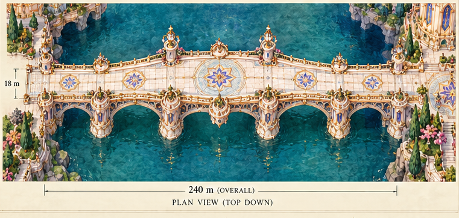
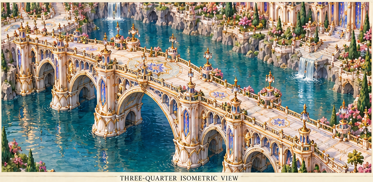
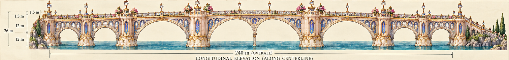
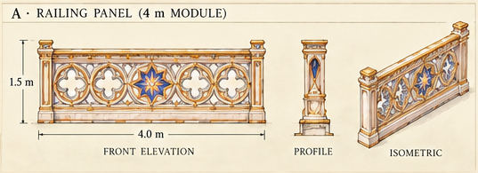
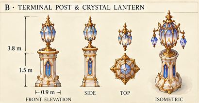
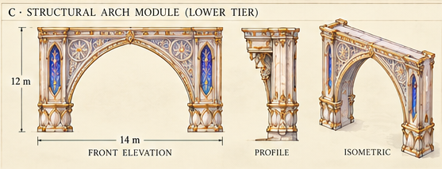
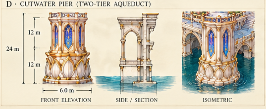
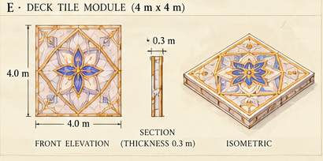
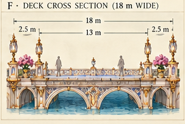
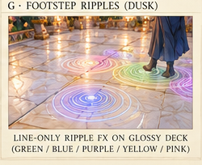

Open one panel at a time. Each is a direct crop of the original sheet.
Overview illustration, not a proven orthographic plan

Overview and support rhythm

Major spans, narrow central support and terminal approaches

Front, profile and isometric of the same rail family

Front, side, top and isometric; freestanding post rather than hanging arm

Pointed open arch, spandrels, end piers and source profiles

Cutwater base, two stacked stages, inset faces, top seat and side structure

Single square tile, profile and isometric

Deck bands, rail/post placement and support section; not a longitudinal deck-segment drawing

Runtime/material effect, not a separate physical bridge segment
